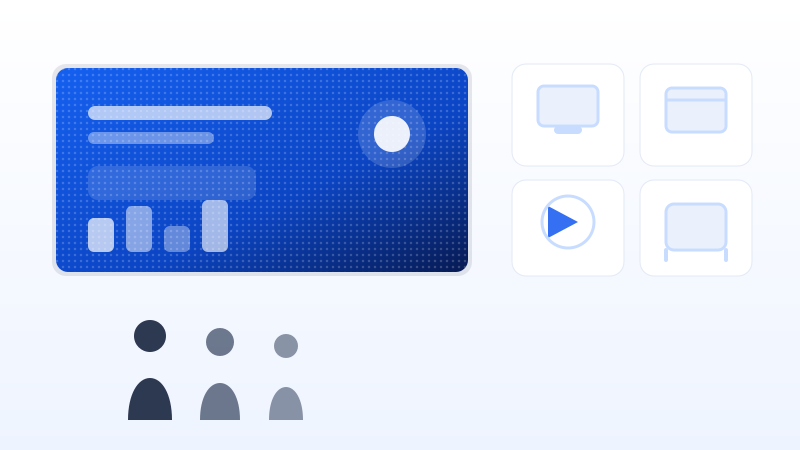

Kebutuhan Ruang Berbeda
Lobi kantor, mall, ruang kelas, hingga ballroom memiliki dimensi dan sudut pandang yang berbeda. Ukuran modul, rasio layar, dan posisi pemasangan perlu disesuaikan agar seluruh area tetap terlihat jelas dari berbagai titik.
Kami menyediakan videotron indoor berkualitas dari Hikvision, Samsung, dan LG untuk lobi kantor, mall, showroom, sekolah, hotel, hingga ruang event di Jakarta dan Jabodetabek. Mulai dari konsultasi spesifikasi, pengukuran ruang, instalasi, sampai layanan purna jual — semuanya dalam satu pintu.
Memilih videotron indoor tidak bisa disamakan untuk semua ruangan. Jarak pandang penonton, luas dinding, tingkat pencahayaan, dan jenis konten yang ditayangkan menentukan spesifikasi yang paling tepat — agar investasi Anda benar-benar terasa hasilnya.
Tim kami membantu mengukur ruang dan merekomendasikan konfigurasi yang paling efisien sebelum Anda memutuskan pembelian.
Lobi kantor, mall, ruang kelas, hingga ballroom memiliki dimensi dan sudut pandang yang berbeda. Ukuran modul, rasio layar, dan posisi pemasangan perlu disesuaikan agar seluruh area tetap terlihat jelas dari berbagai titik.
Warna yang konsisten, kecerahan yang stabil, dan refresh rate tinggi menentukan seberapa nyaman layar dilihat mata maupun kamera. Ini penting untuk konten bergerak, siaran acara, hingga kebutuhan video conference.
Pixel pitch, jenis modul, sistem kontrol, dan metode perawatan berpengaruh pada hasil akhir serta biaya jangka panjang. Kami bantu memilih kombinasi tepat antara kualitas tampilan dan anggaran yang tersedia.
Kami menghadirkan videotron indoor dari tiga brand global yang terbukti andal untuk kebutuhan display digital profesional di Jakarta — lengkap dengan rekomendasi spesifikasi sesuai ruang Anda.
Pilihan populer untuk lobi, showroom, dan ruang meeting dengan tampilan tajam serta sistem kontrol yang mudah dioperasikan.
Untuk kebutuhan tampilan premium tanpa sambungan terlihat, ideal bagi brand yang menonjolkan kualitas visual di area publik.
Solusi efisien untuk instalasi cepat, ringan, dan rapi — cocok untuk kantor, kampus, maupun ruang event dengan kebutuhan dinamis.
Setiap kebutuhan memiliki pendekatan berbeda. Berikut penerapan videotron indoor yang paling sering kami kerjakan di Jakarta dan sekitarnya.
Layar informasi perusahaan, video conference, hingga pengumuman internal untuk lobi dan ruang rapat.
KonsultasikanKonten promo, katalog produk, dan display brand yang menahan perhatian pengunjung lebih lama.
KonsultasikanMedia pembelajaran, informasi akademik, dan presentasi digital yang lebih jelas bagi seluruh peserta.
KonsultasikanBackdrop panggung, rundown acara, hingga branding sponsor dengan tampilan yang rapi dan konsisten.
KonsultasikanKami memilih produk dan merancang instalasi agar hasilnya tetap optimal untuk jangka panjang, bukan hanya bagus saat pertama dipasang.
Warna konsisten, kontras tajam, dan refresh rate tinggi sehingga konten tetap halus, nyaman dilihat, dan aman direkam kamera.
Modul dapat disusun mengikuti bentuk dinding, kolom, maupun sudut ruangan — termasuk tampilan melengkung sesuai kebutuhan desain interior.
Hikvision, Samsung, dan LG tersedia dalam beberapa pilihan pixel pitch serta konfigurasi ukuran, sehingga bisa disesuaikan dengan anggaran.
Mulai dari survei lokasi, pengadaan, instalasi, pelatihan operator, hingga dukungan teknis berkala di Jakarta dan Jabodetabek.
Panduan praktis dari tim kami untuk membantu Anda mengambil keputusan sebelum membeli videotron indoor di Jakarta.
Pixel pitch, ukuran layar, kecerahan, sampai sistem kontrol — ketahui delapan hal yang perlu dipertimbangkan sebelum memesan videotron indoor agar tidak salah spesifikasi.
Baca SelengkapnyaUlasan komponen biaya mulai dari modul LED hingga instalasi, lengkap dengan tips menyusun anggaran secara realistis.
Baca Selengkapnya
Contoh pemanfaatan videotron indoor yang terbukti efektif untuk bisnis, institusi pendidikan, hingga industri hospitality.
Baca SelengkapnyaBelum menemukan jawaban yang Anda cari? Tim kami siap menjelaskan detail teknis maupun estimasi biaya.
Kirim ukuran ruangan dan jenis konten yang akan ditayangkan, kami berikan rekomendasi spesifikasinya.
Konsultasi GratisVideotron indoor adalah dinding layar digital yang tersusun dari banyak modul LED dan dirancang khusus untuk pemakaian di dalam ruangan. Setiap modul berisi ribuan titik LED yang dikendalikan oleh sistem kontrol pengirim dan penerima, sehingga gambar dari komputer atau media player tampil utuh di seluruh permukaan layar.
Ukuran ideal ditentukan oleh jarak pandang terjauh dan luas area pemasangan. Sebagai gambaran, layar dengan lebar 3–4 meter cocok untuk lobi dan ruang meeting, sedangkan 6–12 meter lebih sesuai untuk mall, ballroom, atau aula. Kami akan menghitung ulang berdasarkan ukuran ruangan Anda agar rasio dan keterbacaan tetap optimal.
Semakin kecil pixel pitch, semakin halus tampilan dari jarak dekat. P1.2–P1.25 cocok untuk ruang meeting dan showroom dengan jarak pandang 2–3 meter, P1.86 ideal untuk lobi dan retail pada jarak 3–5 meter, sedangkan P2.5 efisien untuk layar besar di aula, ballroom, atau mall dengan jarak pandang di atas 5 meter.
Harga dipengaruhi oleh pixel pitch, luas layar, brand modul, sistem kontrol, serta bentuk rangka dan instalasi. Karena setiap proyek berbeda, kami menyusun penawaran berdasarkan kebutuhan — bukan sekadar harga per meter persegi. Kirimkan ukuran area dan kebutuhan konten Anda untuk mendapatkan estimasi terperinci.
Kami fokus pada penjualan videotron indoor, termasuk pengadaan unit untuk kebutuhan jangka panjang. Untuk acara singkat, tim kami dapat membantu mencarikan solusi yang paling masuk akal secara biaya, termasuk opsi konfigurasi modular yang mudah dipindahkan.
Untuk area Jakarta dan Jabodetabek, pengiriman umumnya berlangsung 2–5 hari kerja setelah unit siap. Proses instalasi dan kalibrasi di lokasi biasanya memerlukan 1–3 hari tergantung luas layar serta kondisi akses gedung. Jadwal pasti akan kami sampaikan setelah survei lokasi.
Ya. Setiap unit dilengkapi garansi sesuai ketentuan brand serta dukungan teknis lokal di Jakarta. Kami juga menyediakan penggantian modul, kalibrasi warna, penyediaan suku cadang, dan pendampingan operator setelah instalasi selesai.
Perawatannya sederhana: bersihkan permukaan modul dengan kain kering yang lembut, pastikan sirkulasi udara di belakang layar berjalan baik, atur kecerahan sesuai kondisi ruangan, dan gunakan pengatur tegangan agar aliran listrik stabil. Pemeriksaan berkala setiap 6–12 bulan sangat disarankan.
Ceritakan kebutuhan ruang dan konten Anda. Tim kami akan membantu menghitung ukuran layar, merekomendasikan pixel pitch, serta menyusun penawaran yang sesuai anggaran — tanpa biaya konsultasi.